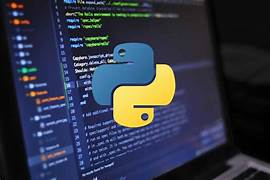
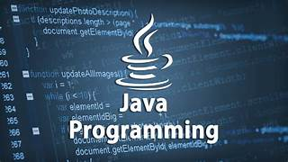
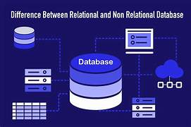

Au cours de ma formation en BUT Informatique, j’ai mené plusieurs projets concrets mobilisant administration systèmes, algorithmique, développement logiciel et exploitation de données.
Projet orienté administration système consistant à concevoir et déployer une infrastructure virtualisée complète.
Debian, Windows Server, VirtualBox, Apache, Samba, NFS, TCP/IP, Cisco Packet Tracer

Développement d’un solveur intelligent capable de résoudre automatiquement une grille Mastermind.
Python, structures algorithmiques, logique combinatoire

Conception et développement d’une application graphique complète dans un cadre de travail collaboratif.
Java, JavaFX, UML, Git, JUnit

Projet de traitement et d’analyse de données industrielles à partir d’une base PostgreSQL.
Python, PostgreSQL, psycopg2, Jupyter, matplotlib